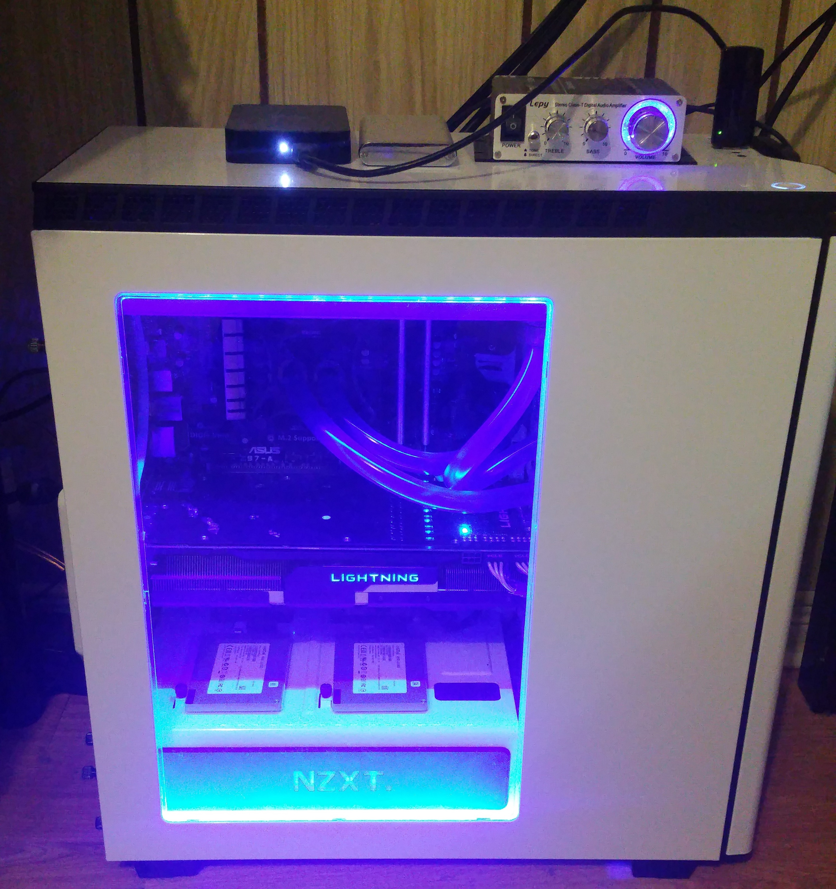
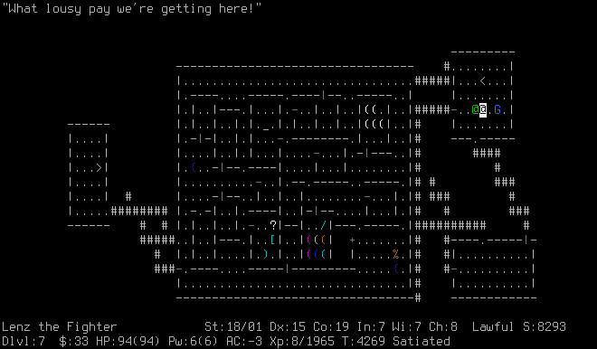
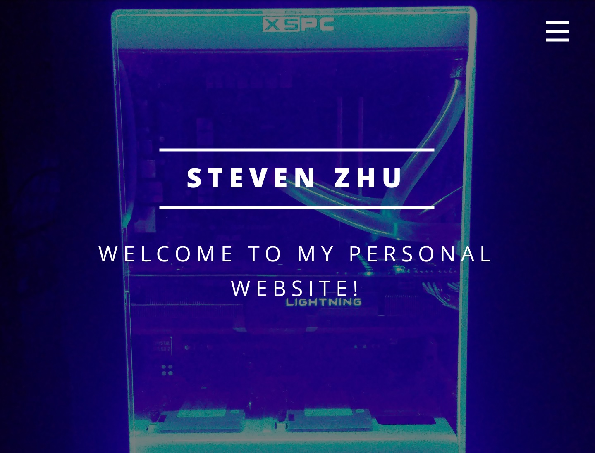

Projects
>Everyday inspirations and ideas that took form in real life.
OHA Board of Directors Portal
While working as IT Technician at Ontario Hospital Association, the IT director asked me to help with developing a stand alone website for the Board of Directors. I mainly worked on the front end UI using Microsoft Sharepoint 2013 and assisted with the backend using PHP. Unfortunately, I don't have permission to show you the website itself, but you can check out a glimpse of the website here!
H440 Cool White Build
 Custom water cooling loop, Msi Lightning 290x, paired with Intel i7 4770k, 16GB of Corsair ram, Asus Z97-A, 2 X Crucial M500 240GB in in Raid 0, overclocked and pushed to its limits. Check out the full deets here!
CC3K - rogue like game
 Developed this game in C++ to be a bases of a rogue-like game as a initial side project. Potential plans for it in the future includes developing UI using xwindows. Check out the source code here! Or a demo here!
Personal Website!
 That's right, the website you are currently on is my most recent project! More updates and tweaks will be done, as well as additional features and links will be added. A mobile version of this website exists as well! To see the source code, go here!
Welcome to my Projects Page!
Here you will find interesting side projects that I have worked on. Filtered from my random inspirations and ideas, those which took form will be displayed here. Please don't hesitate to contact me for more information on these projects!